Underage Wheels: Risks on the Road
- What is Underage Driving?
Underage driving is the illegal act of operating a motor vehicle by individuals below the legal driving age,
typically 16 to 18 years old. It poses significant safety risks due to the inexperience and immaturity of
young drivers. Legal consequences can include fines, penalties, and juvenile detention.
- Recent examples of underage driving
Following are some examples related to underage driving:
- Bangalore Incident:
: A viral video showed a boy driving a Mahindra Thar on a busy road, while an adult
controlled the pedals, causing public outrage and calls for stricter measures.
- Kerala Incident:
Authorities in Kerala announced stricter legal actions against parents to curb
rising cases of underage driving.
- Pune Incident:
On May 19, 2024, a 17-year-old driving a Porsche in Pune killed two IT professionals in a crash.
The minor, who was allegedly intoxicated, had his bail revoked and was sent to a rehabilitation home.
His father and employees of the bars that served him alcohol were also arrested.
- Images of Accidents caused by Underaged Driving
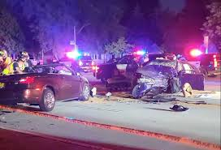
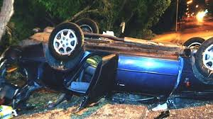
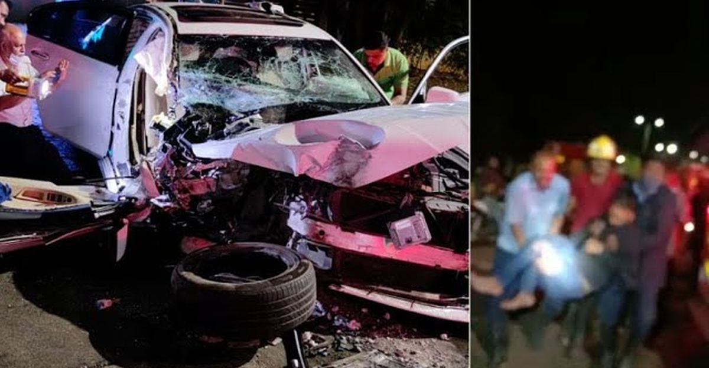
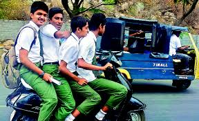
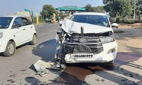
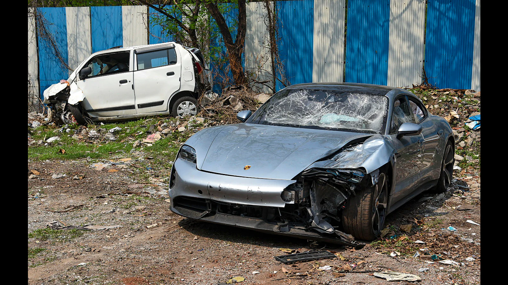
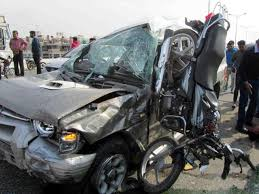
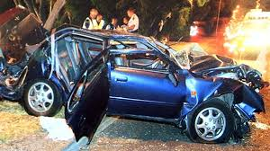
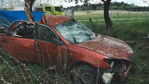
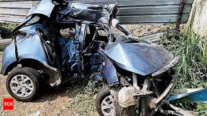
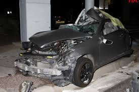
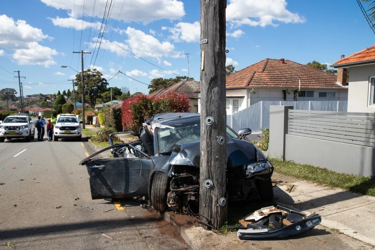
- How to prevent Underage Driving?
The following steps should be taken to prevent plagiarism:
- Proper Legislation and Enforcement of Laws
- Spreading Education and Awareness
- More stricter Parents worldwide
- Innvoation in technology of cars
- Organisation of Peer Programs
- Most Brutal Cases of Underage Driving
Some of the most brutal cases of unerage driving are as follows:-
- Bengaluru, Karnataka (2020):
A 17-year-old boy, driving his family’s car without permission, collided head-on with another vehicle, killing the driver and injuring two passengers. The boy was said to be driving recklessly and at a high speed.
- Delhi (2017):
A 17-year-old boy, driving his father's BMW, rammed into a motorcycle, killing the rider on the spot. The boy was allegedly racing with another car at the time of the accident. This incident led to increased scrutiny of juvenile driving offenses in the capital.
-
Brisbane, Australia (2021):
A 17-year-old driver ran a red light at high speed, colliding with another vehicle and causing a multi-vehicle accident that killed four people, including a pregnant woman and her three children. The crash was so severe that it sparked widespread outrage and calls for tougher penalties for young drivers.
- Alberta, Canada (2012):
A 17-year-old driver, speeding and under the influence of alcohol, crashed into another vehicle, killing all four occupants of the other car. The crash was so severe that it led to stricter enforcement of DUI laws for young drivers in the region.
- Johor, Malaysia(2010):
A 17-year-old boy, driving without a license, crashed into a bus stop, killing eight teenagers and injuring more. The incident highlighted the dangers of underage driving and led to a public outcry for stricter driving laws.
- Nature of Punishments in different countries as per their laws
- USA
- License Suspension or Revocation
- Fines
- Probation
- Juvenile Detention or Community Service
- Restitution
- Parental Liability
- Incarceration
- Insurance Consequences
- India
- Fines
- Imprisonment
- Vehicle Registration Cancellation
- Juvenile Justice Act
- Community Service and Counseling
- License Ineligibility
- Incarceration
- Parental Liability
- Eastern Europe
- License Suspension or Revocation
- Fines
- Parental Responsibility
- Educational Programs
- Criminal Charges
- Parental Liability
- Australia
- License Suspension or Revocation
- Fines
- Probation
- Community Service and Education Programs
- Juvenile Justice System
- Parental Liability
- Insurance Consequences